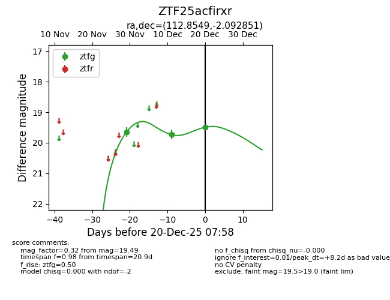
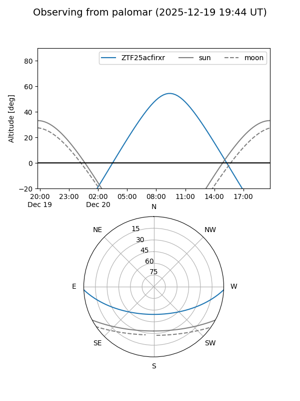
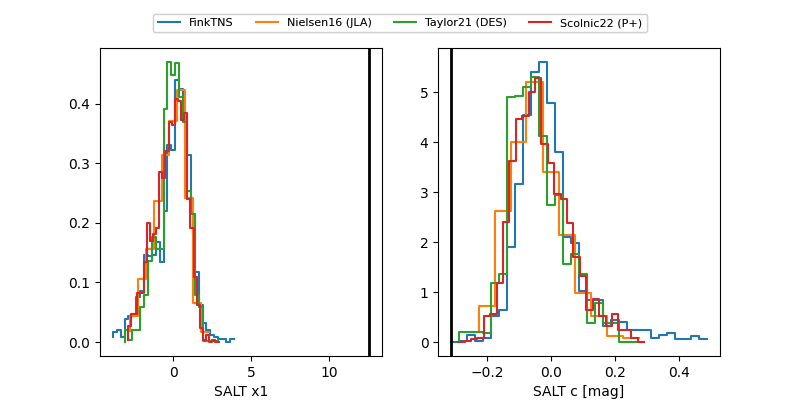

ZTF25acfirxr
Target ZTF25acfirxr at 2025-12-20 08:00
Aliases and brokers:
FINK: fink-portal.org/ZTF25acfirxr
Lasair: lasair-ztf.lsst.ac.uk/objects/ZTF25acfirxr
ALeRCE: alerce.online/object/ZTF25acfirxr
alt names
ZTF25acfirxr (ztf,fink_ztf)
Coordinates:
equatorial (ra, dec) = 112.8549,-2.09285
equatorial (HMS+DMS) = 07:31:25.17,-02:05:34.26
galactic (l, b) = (219.4010,+7.91590)
Flags:
Photometry:
last ztfg=19.49
3 ztfg detections
Lightcurve

Visibility


Additional plots
